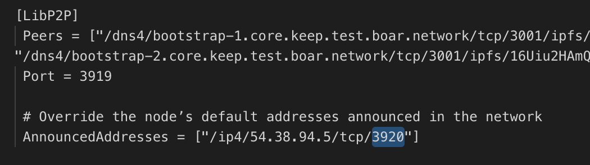
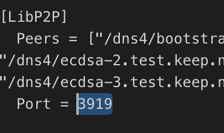

#1. Get server IP.
You can get IP from Random Beacon config.toml, "AnnouncedAddresses" section.
Also you can get primary IP from server:
curl ifconfig.coIf you haven't curl, just install it.
Debian/Ubuntu:
sudo apt-get install curlMacOs:
brew install curl#2. Get server port.
Random Beacon node.
Open config.toml, find "AnnouncedAddresses" section. After that find "/tcp/" and copy port number.

ECDSA node.
Open config.toml, find "[LibP2P]" section, then find "Port".

You can check both nodes: first Random Beacon, then ECDSA.
If you have only ipv6 address, it should also be verified.